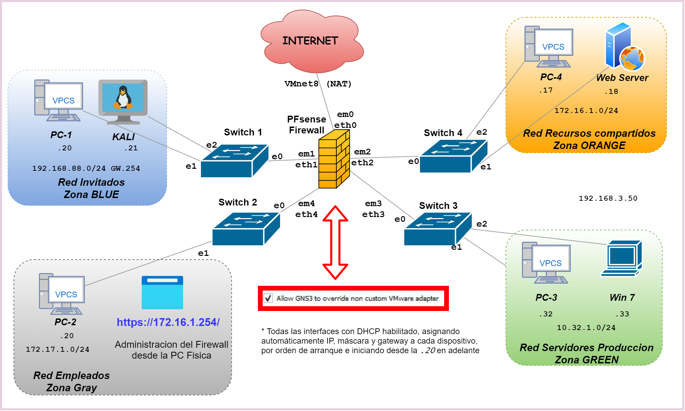
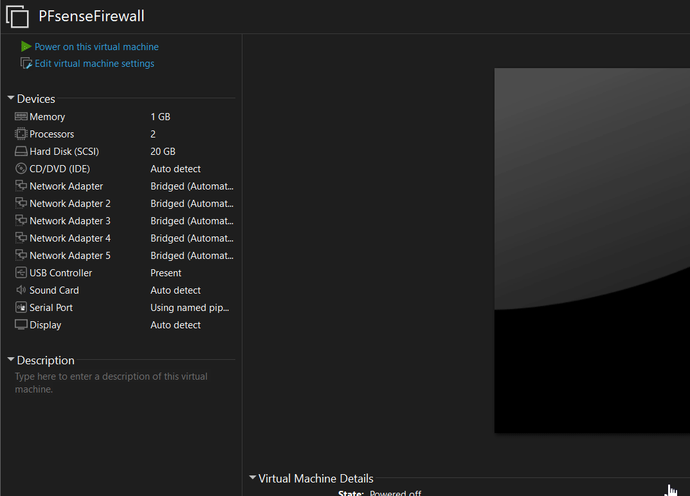
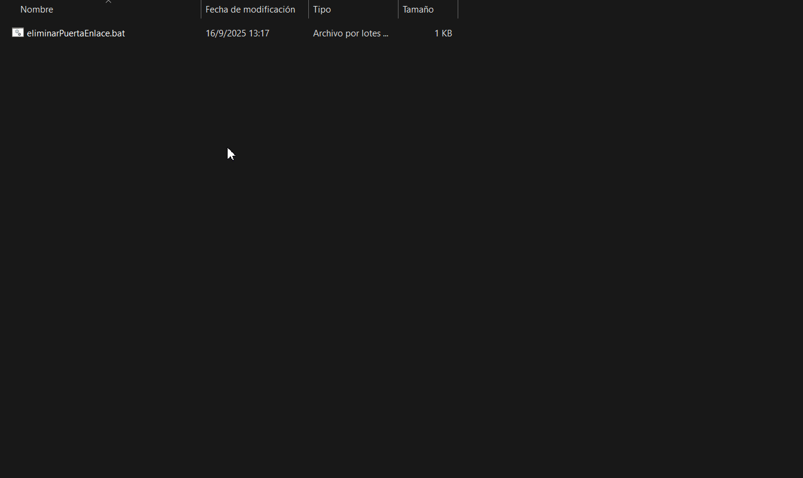
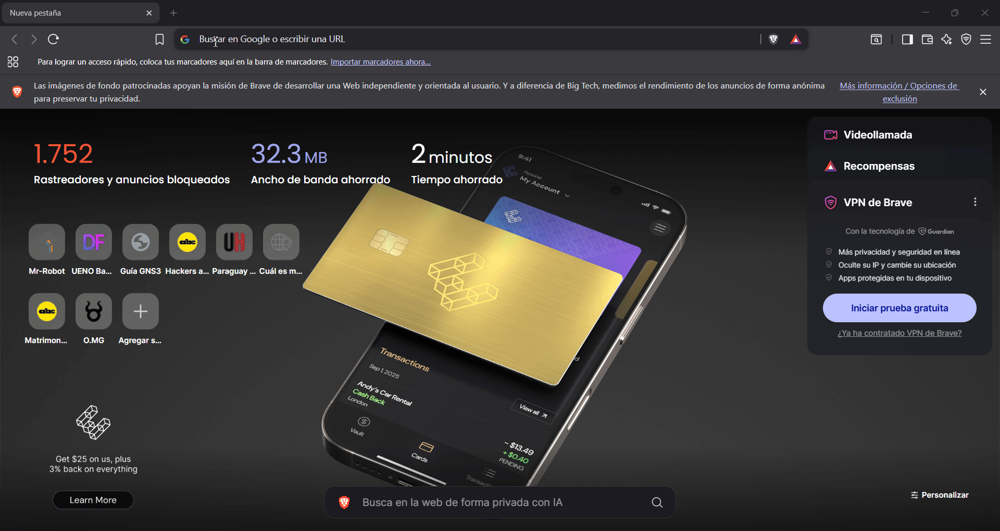

📘 Guía del Trabajo Final
Diseño e implementacion segura
1. 🎯 Objetivo
- Integrar y aplicar de manera práctica los conceptos desarrollados a lo largo del módulo, mediante la implementación de un firewall de nueva generación en un entorno controlado.
-
Replicar un escenario de infraestructura empresarial real, con segmentación de red en zonas:
- RED – Zona roja conectada a internet
- BLUE – Invitados
- GRAY – Empleados
- ORANGE – Recursos compartidos / DMZ
- GREEN – Producción
La segmentación es clave para reducir superficie de ataque y minimizar riesgos.
-
Resultados esperados:
- Conectar y administrar dispositivos en su zona, garantizando servicios internos y acceso controlado a Internet.
- Configurar reglas que simulen políticas corporativas:
- Restringir accesos no autorizados.
- Proteger los servidores de producción.
- Habilitar solo servicios necesarios en la DMZ.
- Reflexionar sobre segmentación, control de accesos y firewalls perimetrales como pilares de ciberdefensa.
- Enfoque estratégico: demostrar cómo una arquitectura bien diseñada fortalece la resiliencia ante incidentes.
2. 🛠️ Entorno de trabajo
2.1. Herramientas requeridas
- VMware Workstation
- GNS3 App
- GNS3 (VM)
- VPCS (gns3)
- Ethernet Switch (gns3)
- pfSense (VM)
- Kali Linux(VM)
- Windows 7 (VM)
- Web Server (VM)
2.2. Acceso a la VM de pfSense
- Descargar desde la carpeta compartida (clave publicada en clase).
- Directorio: 3. VMs > D. Firewall
- Usuario:
admin - Contraseña: (misma de la carpeta compartida)
- Enlace: Carpeta Compartida
2.3. Redes predefinidas en pfSense
| Zona | Descripción | Red | Gateway | DHCP |
|---|---|---|---|---|
| BLUE | Invitados | 192.168.88.0/24 |
192.168.88.254 |
Habilitado |
| GRAY | Empleados | 172.17.1.0/24 |
172.17.1.254 |
Habilitado |
| ORANGE | DMZ / Recursos | 172.16.1.0/24 |
172.16.1.254 |
Habilitado |
| GREEN | Producción | 10.32.1.0/24 |
10.32.1.254 |
Habilitado |
La Zona "RED" recibe automaticamente su direccion IP desde la interfaz VMnet8(NAT), no es necesario configurar
Todas las interfaces entregan IP por DHCP de cada interfaz den PFsense (las VMs y VPCS reciben IP automáticamente segun el orden de arranque)
3. 📋 Actividades a desarrollar
El escenario propuesto replica la infraestructura de una empresa real, donde la segmentación de la red en distintas zonas de seguridad (BLUE – Invitados, GRAY – Empleados, ORANGE – Recursos compartidos/DMZ, y GREEN – Producción) constituye una estrategia clave para reforzar la protección de la información y minimizar riesgos.
3.1. Conexión de las VMs a sus zonas

- Una vez descargada el PFsense, abrir desde el VMwareWorkstation y configurar las VMnets
- Conectar cada PC/Servidor al switch e interfaz de la zona según la arquitectura.

Consideraciones de red en la PC física
Encender el PFsense y tener en cuenta lo siguiente
Cuando pfSense se enciende, asigna varias puertas de enlace (gateways) a la PC física.
Esto provoca que Windows muestre varias rutas predeterminadas (0.0.0.0/0), lo que puede causar
inestabilidad o pérdida de conexión a Internet.
Para solucionarlo, se deben eliminar las puertas de enlace de las interfaces sobrantes.
Con el siguiente script de ejemplo eliminarPuertaEnlace.bat se eliminan automáticamente esas rutas extra:
@echo off
echo =============================================
echo Eliminando puertas de enlace extra de pfSense
echo =============================================
:: Borra la ruta con gateway 10.32.1.254
route delete 0.0.0.0 mask 0.0.0.0 10.32.1.254
:: Borra la ruta con gateway 172.16.1.254
route delete 0.0.0.0 mask 0.0.0.0 172.16.1.254
:: Borra la ruta con gateway 192.168.88.254
route delete 0.0.0.0 mask 0.0.0.0 192.168.88.254
:: Borra la ruta con gateway 172.17.1.254
route delete 0.0.0.0 mask 0.0.0.0 172.17.1.254
echo =============================================
echo Operacion finalizada. Verifique con: route print
echo =============================================
pause
Descargar eliminarPuertaEnlace.bat
Una vez descargada, ejecutar como administrador para que eliminar las cuatro puerta de enlace o Gateway:

⚠️ Advertencia: Para tener un control de cada paso, si no quieres ejecutar el script, puedes hacerlo desde la terminal con privilegio de administrador y ejecutar
"route delete 0.0.0.0 mask ..." (como esta más arriba) para cada una de las cuatro puerta de enlace.
Es importante que elimines esas puerta de enlaces, de no hacerlo tu PC Fisica puede tener problemas de conectividad a internet
3.2. Administración del firewall
- Probar ping 172.16.1.254 desde la PC física.
- Acceso a administración: si reponde al ping exitoso ya puedes acceder a la interfaz de configuracion desde la PC física: https://172.16.1.254/
- Capturar pantalla de login y del dashboard.

- Algunas reglas vienen de ejemplo y pueden modificarse.

Encender el PFsense y tener en cuenta lo siguiente
Cuando pfSense se enciende, asigna varias puertas de enlace (gateways) a la PC física. Esto provoca que Windows muestre varias rutas predeterminadas (0.0.0.0/0), lo que puede causar inestabilidad o pérdida de conexión a Internet. Para solucionarlo, se deben eliminar las puertas de enlace de las interfaces sobrantes.
Con el siguiente script de ejemplo eliminarPuertaEnlace.bat se eliminan automáticamente esas rutas extra:
@echo off echo ============================================= echo Eliminando puertas de enlace extra de pfSense echo ============================================= :: Borra la ruta con gateway 10.32.1.254 route delete 0.0.0.0 mask 0.0.0.0 10.32.1.254 :: Borra la ruta con gateway 172.16.1.254 route delete 0.0.0.0 mask 0.0.0.0 172.16.1.254 :: Borra la ruta con gateway 192.168.88.254 route delete 0.0.0.0 mask 0.0.0.0 192.168.88.254 :: Borra la ruta con gateway 172.17.1.254 route delete 0.0.0.0 mask 0.0.0.0 172.17.1.254 echo ============================================= echo Operacion finalizada. Verifique con: route print echo ============================================= pauseDescargar eliminarPuertaEnlace.bat
Una vez descargada, ejecutar como administrador para que eliminar las cuatro puerta de enlace o Gateway:

Es importante que elimines esas puerta de enlaces, de no hacerlo tu PC Fisica puede tener problemas de conectividad a internet
- Probar ping 172.16.1.254 desde la PC física.
- Acceso a administración: si reponde al ping exitoso ya puedes acceder a la interfaz de configuracion desde la PC física: https://172.16.1.254/
- Capturar pantalla de login y del dashboard.
- Algunas reglas vienen de ejemplo y pueden modificarse.
3.2. Administración del firewall

3.3. Prueba de conectividad inicial
- Comunicaciones dentro de la misma zona.
- Verificar que cada dispositivo reciba IP por DHCP (desde .20 en adelante según orden de arranque)
- Acceso a los gateways (ping x.x.x.254) dentro de cada zona a su respectiva puerta de enlace o gateway.
- Probar ping al gateway de cada PC/servidor a su zona
ping x.x.x.254si todo esta correcto deberia reponder
- Evidencias: capturas de
pingipconfigifconfig
ip dhcp -r
3.4. Implementación de reglas de firewall
BLUE Invitados
- Solo acceso a Internet.
- Bloqueado a zonas internas.
GRAY Empleados
- Acceso a Internet.
- Permitir acceso a ORANGE.
- Denegar acceso a GREEN.
ORANGE DMZ/Recursos
- Servidor web accesible desde todas las zonas e Internet.
- Limitar a puertos
80/443
GREEN Producción
- ZONA MÁS PROTEGIDA.
- Acceso administrativo solo desde GRAY.
- Denegar desde BLUE.
- Restringir desde ORANGE.
3.5. Capturas y documentación
- Configuración de interfaces.
- Asignación de IP por DHCP.
- Conectividad (ping).
- Reglas por zona.
- Acceso al servidor web en DMZ (ORANGE).
4. 📝 Entregables
4.1. Informe (PDF)
- Introducción breve a la práctica.
- Capturas con descripción.
- Resumen de reglas y justificación.
- Reflexión sobre dificultades y aprendizajes.
4.2. Presentación final
- Duración: 7–10 minutos por grupo.
- Demostración en vivo de una funcionalidad (p. ej., bloqueo BLUE→GREEN; permitido GRAY→ORANGE).
- Reflexión grupal: lo más difícil y lecciones aprendidas.
5. 📊 Evaluación
Ejemplo de configuracion inicial
6. ⚠️ Nota final